Une fois connecté, vous naviguez entre les pages grâce au menu. Il se présente différemment sur ordinateur et sur smartphone, mais il mène aux mêmes endroits.
Les pages principales
Page
À quoi elle sert
Chapitre
Accueil
Le tableau de bord de votre exploitation : chiffres clés, raccourcis, carte, équipe, formations, actualités.
4
Parcelles
La liste et la carte de vos parcelles.
5 et 6
Carnet de champ
Vos cultures, traitements, travaux, exports et archives.
7 à 10
Inventaire
Le stock de votre local phyto.
11
Mon compte
Vos informations, votre exploitation, votre équipe, votre mot de passe, les mandats.
12
Besoin d'aide
Questions fréquentes, vidéos et contacts du support.
15
Sur ordinateur : le menu de gauche
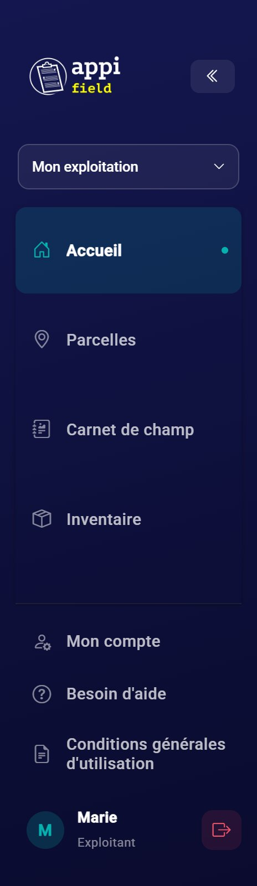
Le menu de gauche.
Le menu reste affiché à gauche sur toutes les pages. De haut en bas :
Le logo Appi'Field : un clic vous ramène à l'accueil.
La flèche « « » : replie le menu (voir ci-dessous).
Le choix de l'exploitation, seulement si quelqu'un vous a donné accès à son exploitation (voir plus bas).
Les pages : Accueil, Parcelles, Carnet de champ, Inventaire.
En bas : Mon compte, Besoin d'aide, Conditions générales d'utilisation.
Votre nom (un clic ouvre Mon compte) et, à droite, le bouton rouge de déconnexion.
La page où vous êtes est mise en évidence dans le menu (fond coloré et petit point).
Replier le menu
Sur un petit écran d'ordinateur, vous pouvez gagner de la place : cliquez sur la flèche « « » en haut du menu. Il ne garde alors que les icônes. Passez la souris sur une icône pour voir le nom de la page. Pour le déplier, cliquez sur la flèche « » ».
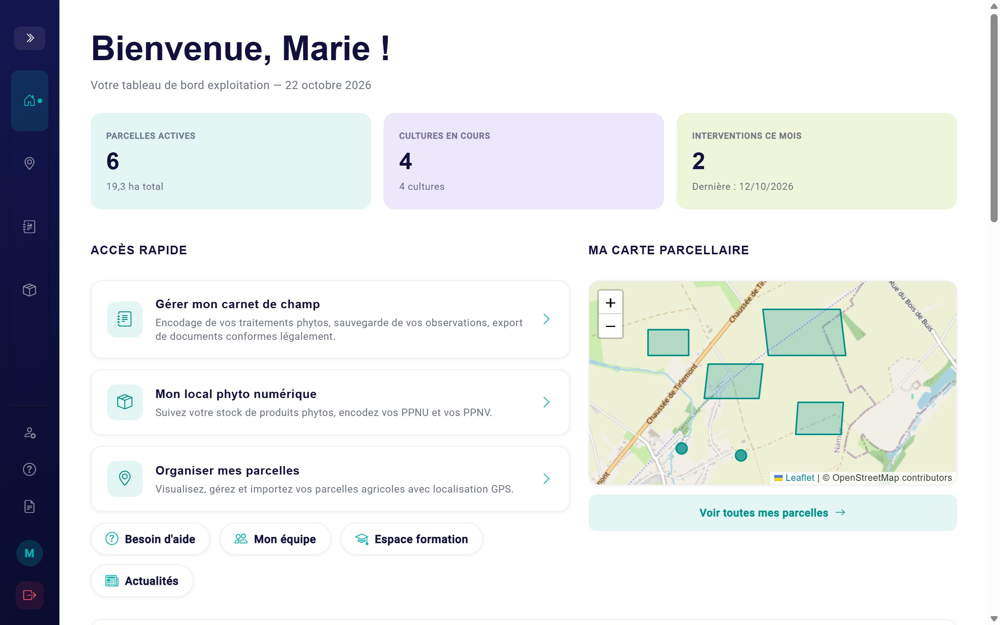
Le menu replié : seules les icônes restent visibles.
Bon à savoirAppi'Field se souvient de votre choix (menu replié ou déplié) d'une page à l'autre. Après une déconnexion, le menu revient déplié.
Sur smartphone : la barre du bas et le menu « Plus »
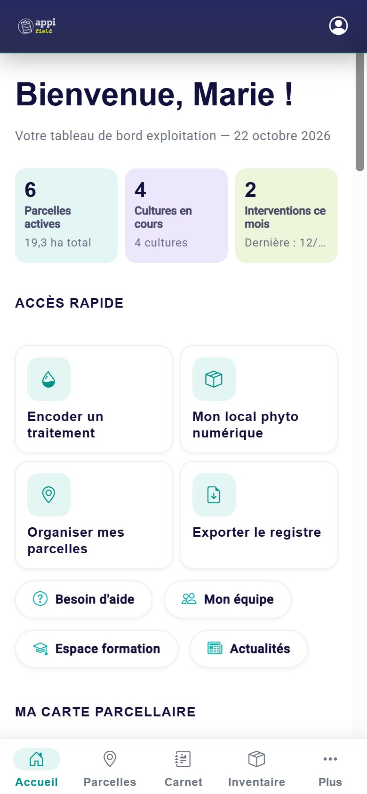
L'accueil sur smartphone, avec la barre du bas.
La barre du bas
Elle reste toujours visible en bas de l'écran, avec les 4 pages principales : AccueilParcellesCarnetInventaire, et le bouton Plus. La page où vous êtes est surlignée.
La barre du haut
Sur les 4 pages principales : le logo à gauche, et l'icône de profil à droite (elle ouvre Mon compte).
Sur les autres pages (Ma carte, Mes archives, Mon compte…) : une flèche ← suivie du nom de la page.
Le menu « Plus »
Touchez Plus : un panneau monte depuis le bas de l'écran. Il contient :
l'exploitation active, si vous avez accès à l'exploitation de quelqu'un d'autre ;
Pour fermer le panneau sans rien choisir, touchez la partie grisée de l'écran, au-dessus du panneau.
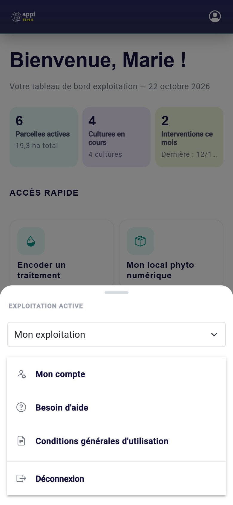
Le menu « Plus ».
La flèche de retour ←
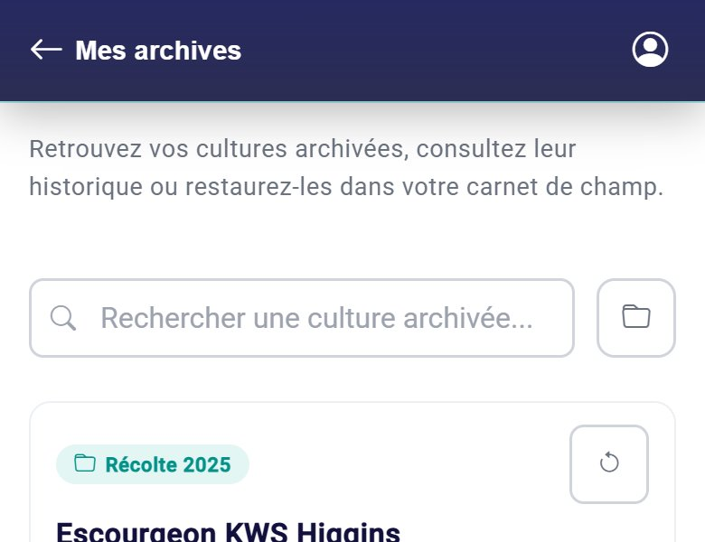
La flèche ← et le nom de la page.
Touchez la flèche ← pour revenir à la page précédente. Si vous êtes arrivé directement sur la page (par exemple depuis un favori), la flèche vous emmène à la page « parente » : de Ma carte vers Parcelles, de Mes archives vers le Carnet de champ, sinon vers l'accueil.
Le bouton ↑Sur les longues pages, un bouton rond avec une flèche vers le haut apparaît en bas à droite : il vous ramène en haut de la page.
Changer d'exploitation
Cette partie ne vous concerne que si un autre exploitant vous a donné accès à son carnet de champ (un mandat, voir chapitre 13). Sinon, ce choix n'apparaît pas.
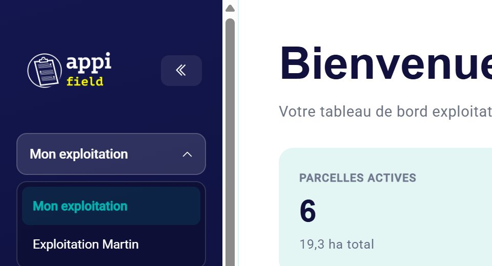
Le choix de l'exploitation, en haut du menu.
Cliquez sur le nom de l'exploitation en haut du menu (sur smartphone : Plus › Exploitation active).
Choisissez Mon exploitation ou celle de l'exploitant concerné.
La page se recharge : les pages Parcelles, Carnet de champ et Inventaire affichent maintenant l'exploitation choisie.
Vérifiez avant d'encoderLe nom de l'exploitation active est toujours affiché en haut du menu. Jetez-y un œil avant d'ajouter un traitement, pour l'encoder dans le bon carnet.
Quand vous fermez l'onglet (ou le navigateur), Appi'Field oublie votre choix : à la réouverture, vous êtes de retour sur Mon exploitation. C'est une sécurité, pour ne pas encoder par erreur dans le carnet de quelqu'un d'autre.
Mon compte affiche toujours vos informations, même quand vous travaillez dans l'exploitation de quelqu'un d'autre.
Une page introuvable ?
Si vous tapez une mauvaise adresse ou suivez un lien qui n'existe plus, Appi'Field affiche « Page introuvable ». Trois boutons vous remettent sur le bon chemin :
Page précédente : là où vous étiez ;
Retour à l'accueil ;
Besoin d'aide ?.
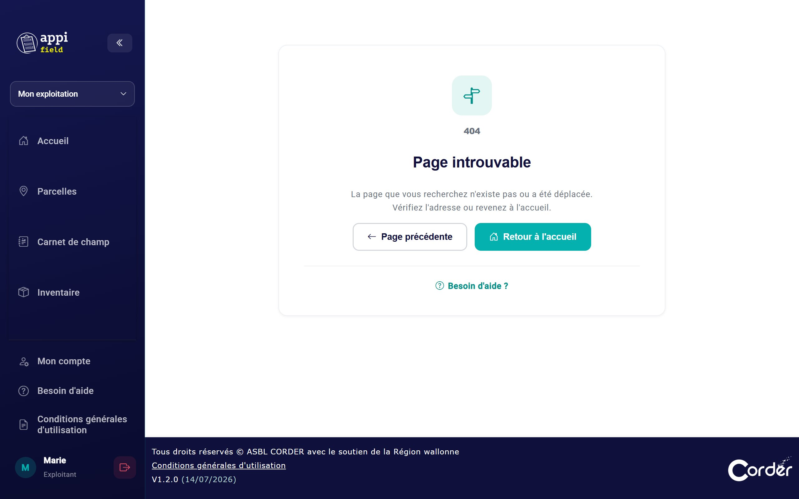
4L'accueil
L'accueil est la première page que vous voyez après la connexion. C'est le tableau de bord de votre exploitation : en un coup d'œil, vous savez où vous en êtes, et vous accédez à tout le reste.
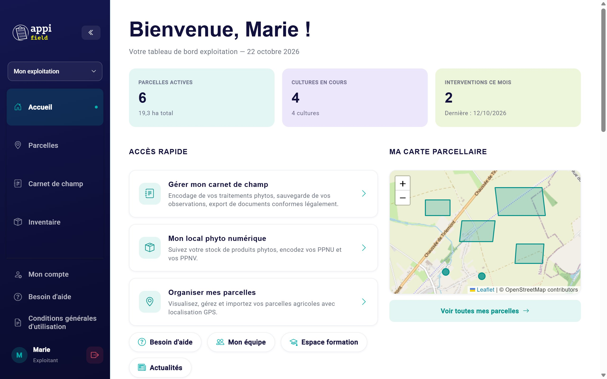
Le haut de l'accueil : les chiffres clés, l'accès rapide et la carte.
De haut en bas, l'accueil contient : les chiffres clés, l'accès rapide, la carte de vos parcelles, votre équipe, les formations et les actualités.
Les chiffres clés
Encadré
Ce qu'il compte
Parcelles actives
Le nombre de toutes vos parcelles, et leur superficie totale en hectares (les ares et les m² sont convertis automatiquement).
Cultures en cours
Le nombre de cultures de votre carnet, sans les cultures archivées. Si vous n'en avez qu'une, son nom s'affiche.
Interventions ce mois
Le nombre de traitements phytos et de travaux au champ dont la date tombe dans le mois en cours (du 1er au dernier jour du mois), et la date de la dernière intervention.
Un chiffre qui ne bouge pas ?Les chiffres se mettent à jour chaque fois que vous revenez sur l'accueil. Une intervention encodée avec une date du mois précédent n'est pas comptée dans « ce mois ».
L'accès rapide
Trois grandes cartes mènent aux pages les plus utilisées :
Gérer mon carnet de champ : la page Carnet de champ ;
Mon local phyto numérique : la page Inventaire ;
Organiser mes parcelles : la page Parcelles.
Sur smartphone : deux raccourcis en plusEncoder un traitement ouvre directement le formulaire d'un nouveau traitement, et Exporter le registre ouvre directement la fenêtre d'export. Pratique au bord du champ.
Sous les cartes, quatre petits boutons font défiler la page jusqu'à la section concernée : Besoin d'aide (ouvre la page d'aide), Mon équipe, Espace formation et Actualités.
Ma carte parcellaire
Un aperçu de toutes vos parcelles sur une carte. La carte se centre automatiquement sur elles.
Les parcelles dessinées apparaissent avec leur contour ; celles placées par un point ou par une adresse, avec un rond.
Cliquez sur une parcelle pour voir son nom et sa superficie.
Sur ordinateur, les boutons + et − (ou la molette de la souris) zooment.
Voir toutes mes parcelles ouvre la page Parcelles.
Sur smartphoneLa carte de l'accueil est un simple aperçu : on ne peut ni la déplacer ni zoomer, pour ne pas gêner le défilement de la page. Pour travailler sur la carte, touchez Voir toutes mes parcelles.
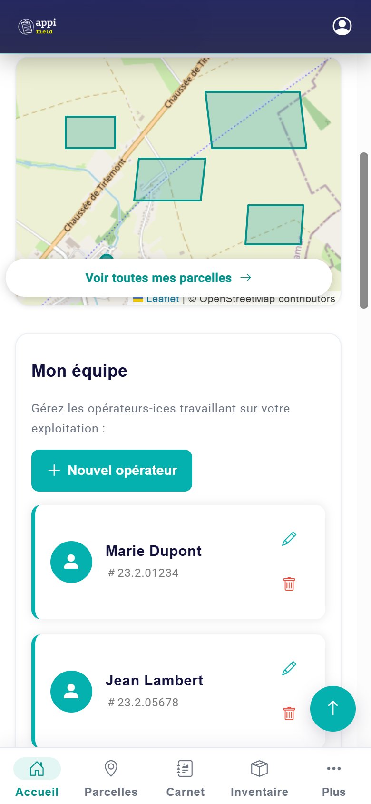
La carte et le début de « Mon équipe » sur smartphone.
Mon équipe
La liste des opérateurs : les personnes qui réalisent les traitements sur votre exploitation, vous compris. Chaque traitement que vous encoderez sera attribué à l'un d'eux.
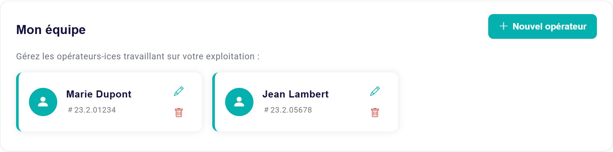
Deux opérateurs, avec leur numéro de phytolicence.
Ajouter un opérateur
Cliquez sur Nouvel opérateur.
Tapez son nom et prénom (obligatoire).
Tapez son numéro de phytolicence s'il en a un : seulement les chiffres, les points s'ajoutent tout seuls.
Cliquez sur Enregistrer.
Modifier ou supprimer
Le crayon rouvre le formulaire : corrigez puis Mettre à jour.
La corbeille supprime l'opérateur, après confirmation.
Ne supprimez pas un opérateur qui a déjà traitéSi vous supprimez un opérateur, son nom disparaît de tous ses traitements passés dans le registre exporté, et le recréer ne le remet pas. Supprimez seulement un opérateur ajouté par erreur, qui n'a encore réalisé aucun traitement.
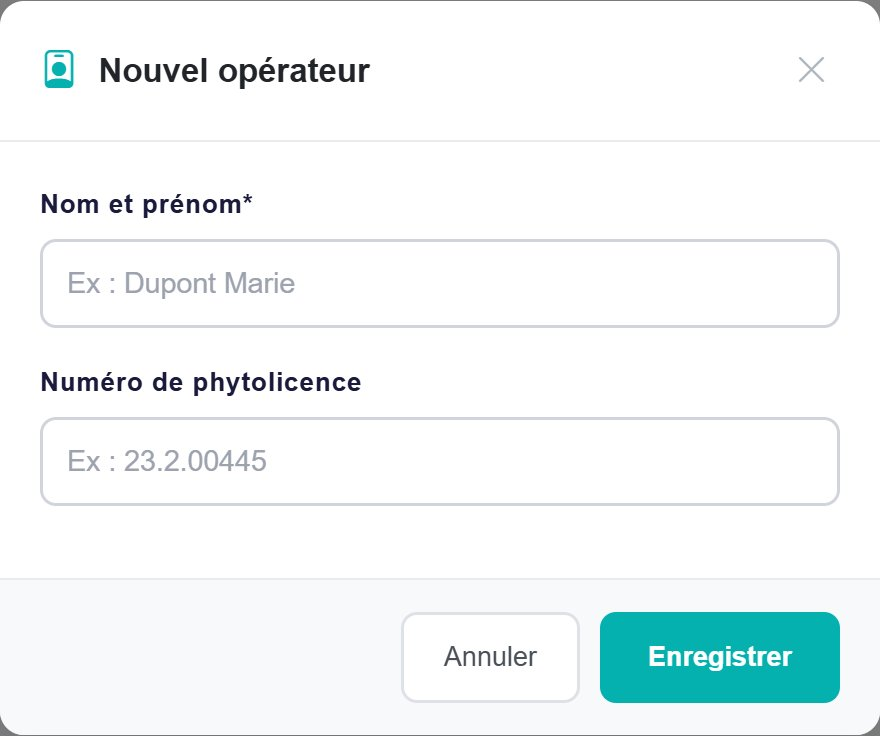
Le formulaire « Nouvel opérateur ».
Message
Que faire ?
« Le nom et prénom est obligatoire. »
Tapez le nom de l'opérateur avant d'enregistrer.
« Erreur lors de l'enregistrement. » / « Erreur lors de la mise à jour. »
Vérifiez votre connexion internet et réessayez.
Pourquoi la phytolicence ?Elle n'est pas obligatoire, mais elle apparaît dans le registre exporté, à côté du nom de l'opérateur. Indiquez-la si la personne en a une, et mettez-la à jour quand sa phytolicence est renouvelée.
Vous retrouvez la même liste dans Mon compte › Mon équipe : les deux endroits sont reliés.
Espace formation
Les prochaines formations à Appi'Field et les vidéos disponibles. Sur un grand écran, les flèches à gauche et à droite font défiler les cartes ; sur smartphone, elles sont toutes affichées l'une sous l'autre.
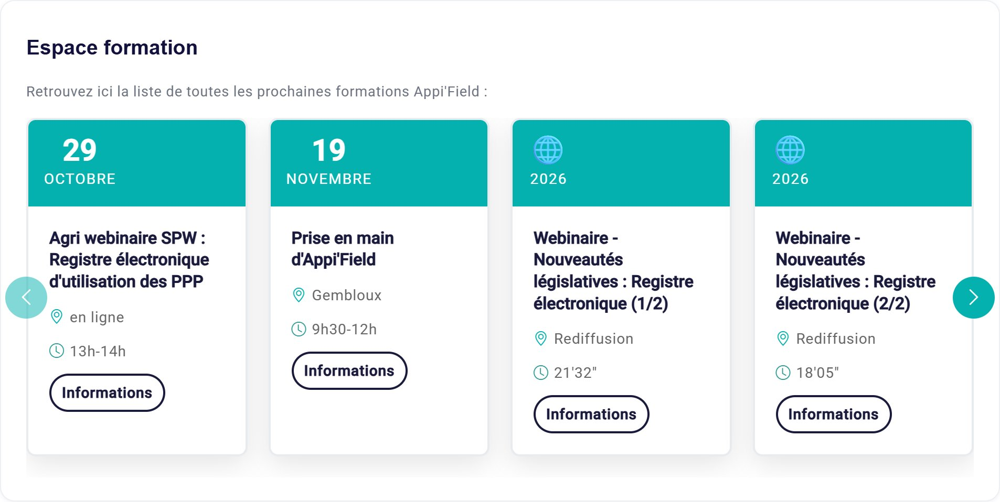
Sur ordinateur : deux sessions à venir et deux rediffusions.
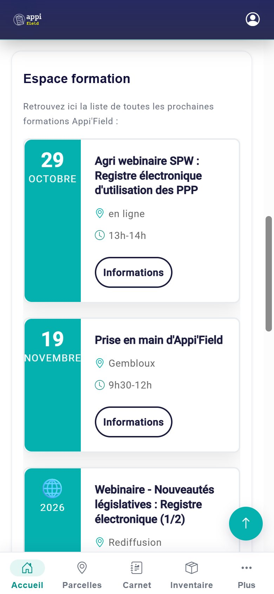
Sur smartphone, les unes sous les autres.
Carte
Ce que vous y voyez
Le bouton « Informations »
Session à venir (une date : « 29 octobre »)
Le titre, le lieu (une ville, ou « en ligne ») et l'horaire.
Ouvre la page de la session, où vous pouvez vous inscrire.
Rediffusion (un globe 🌐 et l'année)
Le titre et la durée de la vidéo.
Ouvre la vidéo (YouTube), à regarder quand vous voulez.
Ces liens s'ouvrent dans un nouvel onglet : Appi'Field reste ouvert dans le premier.
Actualités
Les 4 dernières actualités de Walakis, la plateforme wallonne de la connaissance et de l'innovation agricole (Réseau wallon de la PAC et Service public de Wallonie). Chaque carte affiche le titre, la date et un résumé. Lire la suite ouvre l'article complet sur le site de Walakis, dans un nouvel onglet.
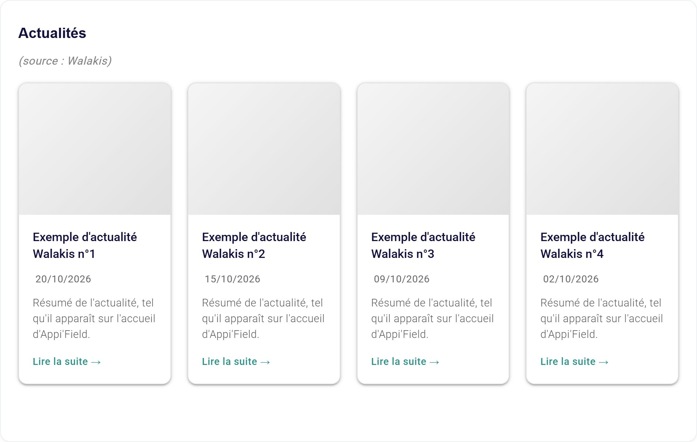
Exemple d'affichage (les titres réels viennent du site de Walakis).
Si les actualités ne peuvent pas être chargées, le message « Impossible de charger les actualités. Veuillez réessayer plus tard. » s'affiche : le reste d'Appi'Field fonctionne normalement.
Le bas de page
Tout en bas de chaque page : la mention de l'ASBL Corder et du soutien de la Région wallonne, un lien vers les Conditions générales d'utilisation, et le numéro de version d'Appi'Field.
Questions fréquentes sur l'accueil
Mon accueil est vide, tous les chiffres sont à 0.
C'est normal au début : créez vos parcelles (chapitre 5), puis vos cultures (chapitre 7). Les chiffres et la carte se rempliront.
Une parcelle n'apparaît pas sur la carte de l'accueil.
Elle n'a ni contour, ni point, ni adresse localisée. Ouvrez-la dans la page Parcelles et localisez-la (chapitres 5 et 6).
Je ne vois pas le choix de l'exploitation dans le menu.
Il n'apparaît que si quelqu'un vous a donné accès à son exploitation et que vous avez accepté la demande (chapitre 13).
J'ai supprimé un opérateur par erreur.
Recréez-le avec Nouvel opérateur pour vos prochains traitements. Ses traitements passés n'afficheront plus son nom dans le registre exporté : ouvrez-les et choisissez à nouveau l'opérateur (chapitre 8).